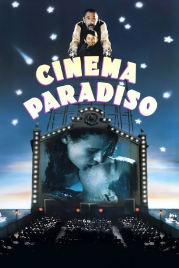

#3204 Cinema Paradiso
Auszeichnungen: 1 Oscars gewonnen 1 GoldenGlobes gewonnen 5 BAFTA-Awards gewonnen
 
 IMDB-Wertung: 8.5 / 10
IMDB-Wertung: 8.5 / 10  IMDB-TOP-Platzierung: 54
IMDB-TOP-Platzierung: 54  Metascore: 80
Metascore: 80 
Alfredo ist tot. Das Paradiso ist tot - es lebe das Kino. Cinema Paradiso ist die Geschichte des skurrilen Filmvorführers Alfredo zu dem kleinen Jungen Toto. In Rom wird Toto ein berühmter Regisseur und kehrt erst wieder in seine sizilianische Heimat zurück, als Alfredo stirbt und das schöne, alte Provinskino abgerissen wird. Alfredos Vermächtnis sind all die zensierten Szenen, die er in vielen Jahren aus so vielen Filmen herausschneiden mußte.
Jahr: 1988
Dauer: 123 Minuten
FSK: 12
Land: Italien Studio: Concorde FilmverleihTonspuren: DD2.0 - ,
Untertitel: Englisch,
Auflösung: 1080p (1796x1080) Größe: 10240 MB
Genre: Drama
Regisseur:  Giuseppe Tornatore
Giuseppe Tornatore
Drehbuch: Giuseppe Tornatore, Giuseppe Tornatore, Vanna Paoli, Richard Epcar
Soundtrack: Ennio Morricone
Darsteller:
 Antonella Attili als Maria Di Vita - Younger
Antonella Attili als Maria Di Vita - Younger Marco Leonardi als Salvatore 'Totò' Di Vita - Teenager
Marco Leonardi als Salvatore 'Totò' Di Vita - Teenager- Agnese Nano als Elena Mendola
- Salvatore Cascio als Salvatore 'Totò' Di Vita - Child
 Nicola Di Pinto als Village Idiot
Nicola Di Pinto als Village Idiot- Jacques Perrin als Salvatore 'Totò' Di Vita - Adult
- Brigitte Fossey als Elena Mendola - Adult
 Philippe Noiret als Alfredo
Philippe Noiret als Alfredo- Roscoe 'Fatty' Arbuckle als Boxer , archive footage, uncredited
- Brigitte Bardot als Juliete Hardy , archive footage, uncredited
- John Barrymore als The Baron , archive footage, uncredited
 Ingrid Bergman als Ivy Peterson , archive footage, uncredited
Ingrid Bergman als Ivy Peterson , archive footage, uncredited- Vilma Bánky als Yasmin , archive footage, uncredited
- Clara Calamai als Ginevra , archive footage, uncredited
 Charles Chaplin als Referee / The Lone Prospector , archive footage, uncredited
Charles Chaplin als Referee / The Lone Prospector , archive footage, uncredited Gary Cooper als Lt. Frederic Henry , archive footage, uncredited
Gary Cooper als Lt. Frederic Henry , archive footage, uncredited Olivia de Havilland als Maid Marian , archive footage, uncredited
Olivia de Havilland als Maid Marian , archive footage, uncredited- Vittorio De Sica als Count Prospero B. , archive footage, uncredited
 Kirk Douglas als Ulysses , archive footage, uncredited
Kirk Douglas als Ulysses , archive footage, uncredited- Errol Flynn als Robin Hood , archive footage, uncredited
 Jean Gabin als Wasska Pepel , archive footage, uncredited
Jean Gabin als Wasska Pepel , archive footage, uncredited Clark Gable als Ace Wilfong , archive footage, uncredited
Clark Gable als Ace Wilfong , archive footage, uncredited- Greta Garbo als Grusinskaya - the Dancer , archive footage, uncredited
- Vittorio Gassman als Walter , archive footage, uncredited
- Massimo Girotti als Il pretore Guido Schiavi , archive footage, uncredited
 Farley Granger als Il tenente Franz Mahler , archive footage, uncredited
Farley Granger als Il tenente Franz Mahler , archive footage, uncredited Cary Grant als Walter Burns , archive footage, uncredited
Cary Grant als Walter Burns , archive footage, uncredited- Laurence Harvey als Joe Lampton , archive footage, uncredited
- Helen Hayes als Catherine Barkley , archive footage, uncredited
- Louis Jouvet als Le Baron , archive footage, uncredited
- Anna Magnani als Maddalena Cecconi , archive footage, uncredited
- Silvana Mangano als Anna / Silvana , archive footage, uncredited
 Marcello Mastroianni als Mario , archive footage, uncredited
Marcello Mastroianni als Mario , archive footage, uncredited Donna Reed als Mary Hatch , archive footage, uncredited
Donna Reed als Mary Hatch , archive footage, uncredited- Jane Russell als Rio McDonald , archive footage, uncredited
- Rosalind Russell als Hildy Johnson , archive footage, uncredited
- Maria Schell als Natalia , archive footage, uncredited
- Norma Shearer als Jan Ashe , archive footage, uncredited
- Simone Signoret als Alice Aisgill , archive footage, uncredited
- Alberto Sordi als Alberto , archive footage, uncredited
 James Stewart als George Bailey , archive footage, uncredited
James Stewart als George Bailey , archive footage, uncredited- Giuseppe Tornatore als Projectionist , uncredited
- Totò als The Suitor - Disguises Himself as Dummy / Band Leader , archive footage, uncredited
 Spencer Tracy als Dr. Henry Jekyll / Mr. Hyde , archive footage, uncredited
Spencer Tracy als Dr. Henry Jekyll / Mr. Hyde , archive footage, uncredited Claire Trevor als Dallas , archive footage, uncredited
Claire Trevor als Dallas , archive footage, uncredited- Rudolph Valentino als The Sheik , archive footage, uncredited
 Alida Valli als La contessa Livia Serpieri , archive footage, uncredited
Alida Valli als La contessa Livia Serpieri , archive footage, uncredited John Wayne als Ringo Kid , archive footage, uncredited
John Wayne als Ringo Kid , archive footage, uncredited- Enzo Cannavale als Spaccafico
- Isa Danieli als Anna
Datei: X:\1988\Cinema Paradiso (1988, FSK12, 1796x1080).mkv seit 14.02.2016
Festplatte: HD 1987-1991
 Es gibt insgesamt 66 Filme in der Gruppe '1988'
Es gibt insgesamt 66 Filme in der Gruppe '1988'